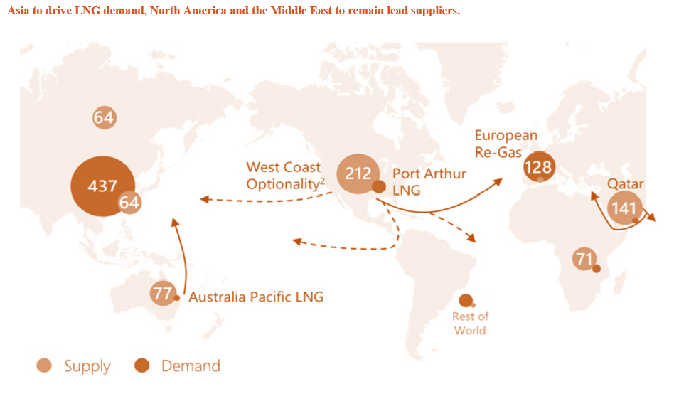

The whitepaper tries to analyze the varying trends and bring comprehensive view on the changing business environment in LNG value chain. The paper brings insights into the global supply and demand of LNG, different factors influencing natural gas supply and demand dynamics and tries to identify reasons for increasing LNG demand that help in deciding where to build LNG liquefaction terminal and regasification terminal. The most critical for any business is to secure the revenue or return on the investments. Building an LNG liquefaction terminal is a capital-intensive project so securing the revenue is inevitable for the project's viability. LNG is like other commodities traded on long-term, short-term, and spot contracts. The paper will bring insights into how the companies in the LNG terminal business secure the LNG offtake for their terminals and highlight how the tenure of offtake agreements changes over the years. Traders and portfolio companies have different views on the contract and its tenure, and accordingly, they operate and conclude the contracts. Decision on LNG pricing is critical and mostly not in the control of the energy companies. The paper brings insights into the pricing trends in different markets and highlights how LNG prices in different regions give an arbitrage opportunity. The decision on capital structure while building an LNG liquefaction terminal is critical. The paper discusses the debt-to-equity percentage companies keep and showcases the trends. The financial institutions also influence the decision on capital structure. The analysis helps in deciding what capital structure to keep for companies planning to invest in LNG terminals. The major commercial models prevalent in the LNG liquefaction terminal business are portfolio, merchant, and tolling. The paper discusses the complete analysis of commercial models and analyzes the IRR (Internal rate of return) companies can expect in each model. The paper also discusses the sensitivity analysis of each commercial model on changing variables such as capital structure (debt/equity), contracts (long-term and short-term), and LNG pricing. The analysis can help energy companies investing in LNG liquefaction terminals by providing IRR range in varying parameters. Finally, the paper highlights the opportunities for energy companies at different points in the LNG value chain with changing trends and helps them make investment decisions. The paper also tries to align the PwC solutions for the companies in the LNG business.
Profit After Tax (PAT) is a key measure of a company's net income after accounting for taxes. It represents the actual earnings available to shareholders after deducting all expenses, including taxes.
Internal Rate of Return (IRR) is a critical metric used to assess the profitability of an investment by calculating the discount rate at which the net present value (NPV) of cash flows equals zero.
| LNG Export Projects | COP’s equity % | COP’s LNG portfolio exposure (mtpa) | Comments | 2023E | 2028P | 2032P |
|---|---|---|---|---|---|---|
| APLNG | 49.9 % | 4.35 | COP plans to be an upstream operator and acquire a considerable stake. Its stake in APLNG is expected to be ~50% by Q2’23. Around 90% of the project volumes are under a long-term contract. | 4.35 | 4.35 | 4.35 |
| Qatargas 3 | 30 % | 2.65 | The project supplies gas to Asia and Europe. | 2.65 | 2.65 | 2.65 |
| Qatargas (NFE/NFS)-gas field | 6.25% | - | COP to acquire a 6.25% stake in Qatar North Field South (NFS) gas project, out of a total 25% interest available for international players. | - | 2.0 | 2.0 |
| Port Arthur LNG (phase 1) | 30 % | - | Port Arthur (phase 1) is fully subscribed (weighted average of contract ~19 years). COP contracted for 50% of the offtake volume (5.5 mtpa) and would supply gas for the entire project. COP aims to spend $3.7 billion over the next 10 years to increase output, with $1.9 billion earmarked for Port Arthur LNG. | - | 5.5 | 5.5 |
| Total | 7.0 | 14.5 | 14.5 | 14.5 |
| Description | Values | Units | Comments |
|---|---|---|---|
| Project Construction Cost (Capex per tonne) | 1,000 | $/t | |
| LNG Project Capex | 9 | $B | |
| Overall Debt Financing | 70% | % | |
| Overall Equity Portion | 30% | % | |
| Equity - Shareholder 1 (Operator) | 70% | % | |
| Equity - Shareholder 2 | 30% | % | |
| Cost of Debt (Interest Rates) | 5% | % | |
| Cost of Equity (Returns) | 15% | % | |
| Equity Investments (70% Equity) | 1.89 | $B | |
| Equity Investments (30% Equity) | 0.81 | $B | |
| Debt Investment | 6.3 | $B |
| Description | Values | Units | Comments |
|---|---|---|---|
| Total Revenue from Natural Gas Sales (1) | 0 | $B | LNG liquefaction terminal is not selling gas, rather purchase the gas as per gas purchase agreement. |
| LNG Prices (Henry Hub) (2) | 645 | $/t | The average export price US (2022) - $12.4/MMBtu |
| Total Revenue (1+2) to Operator (3) | 5.8 | $B | Revenue generated by the project owner |
| Cost of Natural Gas (COGS) | 335 | $/t | Price of NG (Henry Hub) $6.4/MMBtu |
| Liquefaction Costs | 105 | $/t | The unit costs of LNG liquefaction range considered $2MMBtu |
| Expenses (COGS + Liquefaction) (4) | 3.96 | $B | Expenses incurred for NG feedstock and Liquefaction costs |
| Pipeline Transportation Costs | 0 | $/t | |
| Other Opex Costs (SG&A etc.) | 0.36 | $B | Assuming 4% of the capex as per the industry prevalent rate |
| Total Costs (Opex + COGS) (4) | 4.32 | $B | |
| EBITDA (5) | 1.48 | $B | |
| D&A Costs (6) | 0.23 | $B | Average life 40 years - SLM |
| EBIT (7) | 1.2 | $B | |
| Interest Expenses (8) | 0.32 | $B | Assuming 5% interest rate per annum |
| Tax Expenses | 0.24 | $B | Corporate tax rate 25% |
| PAT | 0.71 | $B | Assuming ~30% returns to equity shareholders |